Unsere PRIORI-Madagaskarreise war sensationell
„Guten Tag liebes PRIORI-Team
Kurz gefasst, unsere Madagaskarreise war sensationell, genauso wie schon vor zwei Jahren, nein, sogar noch viel besser 🙂 .
Der Flug verlief reibungslos und als wir am Flughafen in Antananarivo ankamen, waren wir schon ein erstes Mal ein wenig überrascht, dass sich der Flughafen doch ein wenig modernisiert hat. Mit dem hätten wir nicht gerechnet. Nach dem üblichen Chaos am Gepäckband wurden wir von Antsa, unserem Reiseführer und Thierry, unserem Fahrer in Empfang genommen. Anfänglich war Antsa ein bisschen schüchtern. Aber nach ein, zwei Tagen ist er so richtig aufgeblüht. Ab da war er der beste Reisebegleiter, den man sich vorstellen kann. Immer zuvorkommend, hat uns jede Menge Informationen vermittelt, war jederzeit um alles bemüht, immer gut gelaunt und so weiter und so weiter. Einfach top.
Am Tag darauf ging es nach einer kurzen Stadtführung zu Fuss durch Tana (zu Fuss ist diese Stadt eindeutig sympathischer als mit dem Auto) weiter nach Antsirabe, wo wir am nächsten Tag die Brasserie Star (THB 🙂 ) besuchten. Unterhaltsame, kleine Führung und mit Schutzbrille, Schutzanzug und Gehörschutz, so konnte uns auch nichts zustossen. 😉
Nach einem Zwischenhalt in Morondava ging es dann in den Kirindy Wald, wo wir bei einer Tag- und Nachtwanderung das Glück hatten und so ziemlich alle Tiere sahen, die es in diesem Wald zu sehen gibt.
Das wir die eine oder andere abenteuerliche Autofahrt haben werden, war uns bewusst, welche wir dann in Richtung Tsingys zum ersten Mal auch hatten. (Es sollte aber später „noch besser“ kommen).
Der Ausblick von den Tsingys schlussendlich, war der lange, enge und hügelige Aufstieg auf jeden Fall wert. Eine solche Aussicht sieht man nicht oft, fast schon ein wenig surreal.
Nach einem sehr herzlichen Spontanbesuch bei einer Käserei in Antsirabe, welche „Swiss Mutschli“ herstellen, waren wir wieder zurück in Tana und mit dem Kochkurs, kam ein weiteres Highlight auf uns zu, bei welchem wir drei Gänge kochen durften und eine Menge kleiner Dinge der madagassischen Küche erlernen konnten.
Nun war die Zeit für den „anstrengenden Teil“ der Ferien, das Trekking von Anosy Be An’Ala bis Antanambao gekommen, bei welchem uns nun auch unser neuer Reiseführer Michaël begleitete.
Nachdem wir die ziemlich sehr holprige Autofahrt überstanden hatten. Die wir nie vergessen werden. Hat uns bereits unser Trekking-Guide und Koch Patrik in Empfang genommen. Er und sein Team (Erwe, Christobel, Olivier) ver- und umsorgten uns für die kommenden vier Tage einfach nur sensationell.
Es waren strenge, aber auch wieder sensationelle Tage auf dem Trekking. Bei welchem uns die Herzlichkeit der ganzen Bevölkerung immer und immer wieder bewusst wurde. Abends gab es jeweils spannende und lustige Diskussionen, bei denen man etliche Sachen über ganz Madagaskar erfahren hat, wie z. B., dass der Jahres-Reisverbrauch bei unseren Trägern bei sagenhaften 312 Kilogramm pro Person liegt!! Wie diese so viel Reis essen können, ist und bleibt uns ein Rätsel. 😉
Nach einer erneuten seeehr abenteuerlichen Fahrt, konnten wir uns in Vatomandry ein wenig von den „Strapazen“ der vergangenen Tagen erholen. Und nach dem Besuch der Vakona Forest Lodge (immer wieder ein Highlight) in Andasibe waren dann die Ferien leider fast schon wieder vorbei.
Wie ganz zu Beginn kurz erwähnt, unsere Madagaskarreise war sensationell, von vorne bis hinten. Wir freuen uns schon darauf, wenn wir in ca. zwei bis drei Jahren erneut Madagaskar besuchen können, natürlich gerne wieder mit PRIORI.
Ein riesiges Dankeschön an das ganze PRIORI-Team, Antsa, Thierry-„Malaki“, Michaël, Patrik, Erwe, Christobel und Olivier.
Beste Grüsse“
Patrick und Melanie
-
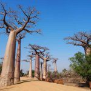
-
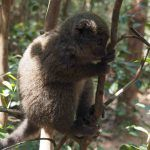
-
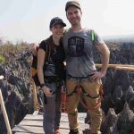
-
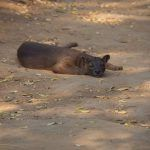
-
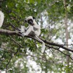
-
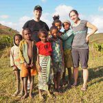
-
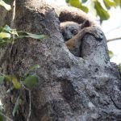
-
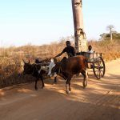
-
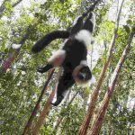
-
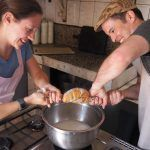
-
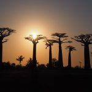
-
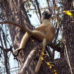